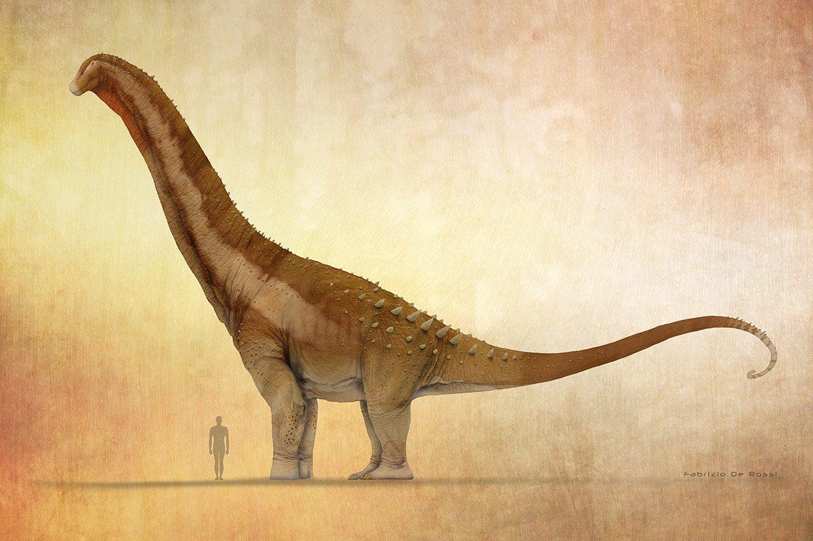

9/03/2025
When I say "cognitive dissonance" when it comes to dinosaur lovers online, really I'm referring to one repeated phenomenon regarding the rejection of newer discoveries and theories based on how marketable the dinosaurs discussed are. Especially when it comes to large carnivorous dinosaurs, phew! You'd be amazed by how many people who study dinosaurs as a hobby or passing interest care about the larger "monsters" of our world's past. This causes a strange occurance, which I'd argue resembles more of a religious belief than straight fact. People are extradordinarily attached to the idea that dinosaurs like the spinosaurus, carnotaurus, and tyrannosaurus all lived together and shared wickedly similar details-- Jurassic Park really did convince people that other carnivores were exactly as marketable as the Tyrannosaurus. Same teeth that stuck out on the outside of their mouth, scaley, scabby skin, fingers and claws built for land, you know, the average things large predators alive now have.
No, in reality, the spinosaurus is probably the most "true" artistic rendition Jurassic Park has of the Tyrannosaurus. Definitely more "reptilian looking" when it comes to alligators and crocodiles, however, while the newest information regarding the Spinosaurus isn't as contested as the "elephant seal model", it's still heavily debated as people naturally want to lean towards a more active hunter.
The new spinosaurus model has everything to do with its hunting methods. It most likely hunted akin to herons, which are a type of wading bird. This means that the spinosaurus most likely stood in a river while waiting for fish to swim underneath it.
